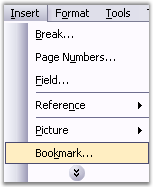
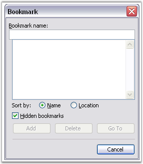

A bookmark identifies a location or selection of text that you name, and identifies them for future reference. For example, you might use a bookmark to identify the text that you want to revise later. Instead of scrolling through the document to locate the text, you can access it by using the Bookmark dialog box.
The following steps illustrate how to add a bookmark in the Word.
1. Select a text or item that you want to assign as the bookmark.
2. Open the Insert menu and click Bookmark. This will open the Bookmark dialog box.

Figure 56: Insert Menu

Figure 57: Bookmark Dialog Box
3. Type the name of the bookmark.
4. Click Add button.
Note: Bookmark names must begin with letter and can contain numbers. You cannot include spaces in a bookmark name. However, you can use the underscore character to separate words.
DocIO gives you a simple mechanism of adding bookmarks to a document, and managing the bookmarks in the document. Every Word document contains a collection of bookmarks. This collection is accessible through the Bookmarks property of the Word document. This collection contains objects of the Bookmark type, and enables you to find and delete bookmarks.
You can find a bookmark in the Bookmarks Collection, by specifying its name, by using the FindByName procedure. You can also remove a bookmark from the Bookmarks Collection, by specifying its index, by using the RemoveAt procedure, or remove a specified bookmark by using the Remove procedure.
Every DocIO bookmark consists of the Bookmark Start and Bookmark End. A BookmarkStart class represents a part of a bookmark which identifies the start of a specific bookmark. A BookmarkEnd class represents a part of a bookmark which identifies the end of a specific bookmark. BookmarkStart and BookmarkEnd have a common property, Name. This property defines the name of the DocIO bookmark.
Class Hierarchy:
ParagraphItem
|
WBookmarkStart
ParagraphItem
|
WBookmarkEnd
BookmarkStart Public Constructor
|
Name |
Description |
|
BookmarkStart.BookmarkStart (IWordDocument, string) |
Initializes a new instance of the BookmarkStart class. |
BookmarkEnd Public Constructor
|
Name |
Description |
|
WTextFormField.WTextFormField (IWordDocument) |
Initializes a new instance of the BookmarkEnd class. |
Public Properties
|
Name |
Description |
|
EntityType |
Gets the type of the entity. |
|
Name |
Gets or sets bookmark name. |
|
OwnerParagraph |
Gets owner paragraph. |
DocIO provides support to navigate between bookmarks. For details, see BookmarkNavigator.
Note: Modification of bookmarks in the Bookmarks Collection causes document corruption.
The following example illustrates how to use bookmarks.
|
[C#]
IWordDocument doc = new WordDocument(); IWSection section = doc.AddSection(); IWParagraph paragraph = section.AddParagraph(); paragraph.AppendText("Book with one "); paragraph.AppendBookmarkStart("one_word"); paragraph.AppendText("word"); paragraph.AppendBookmarkEnd("one_word"); paragraph.AppendText(" selected");
section.AddParagraph(); paragraph = section.AddParagraph(); paragraph.AppendBookmarkStart("beginning_paragraph"); paragraph.AppendText("Beginning of the paragraph selected");
section.AddParagraph(); paragraph = section.AddParagraph(); paragraph.AppendBookmarkStart("bigger_bookmark"); paragraph.AppendText("Smaller bookmark "); paragraph.AppendBookmarkStart("smaller_bookmark"); paragraph.AppendText("is inside "); paragraph.AppendBookmarkEnd("smaller_bookmark"); paragraph.AppendText("of the bigger bookmark"); paragraph.AppendBookmarkEnd("bigger_bookmark");
paragraph = section.AddParagraph(); paragraph.AppendBookmarkStart("multi_paragraph"); paragraph.AppendText("Bookmark starts here and ends in the next paragraph");
paragraph = section.AddParagraph(); paragraph.AppendText("This "); paragraph.AppendBookmarkStart("overlapped bookmark"); paragraph.AppendText("bookmark over"); paragraph.AppendBookmarkEnd("multi_paragraph"); paragraph.AppendText("laps "); paragraph.AppendBookmarkEnd("overlapped bookmark"); paragraph.AppendText("with previous one");
doc.Save("Bookmarks.doc"); |
|
[VB.NET]
Dim doc As IWordDocument = New WordDocument() Dim section As IWSection = doc.AddSection() Dim paragraph As IWParagraph = section.AddParagraph() paragraph.AppendText("Book with one ") paragraph.AppendBookmarkStart("one_word") paragraph.AppendText("word") paragraph.AppendBookmarkEnd("one_word") paragraph.AppendText(" selected")
section.AddParagraph() paragraph = section.AddParagraph() paragraph.AppendBookmarkStart("beginning_paragraph") paragraph.AppendText("Beginning of the paragraph selected")
section.AddParagraph() paragraph = section.AddParagraph() paragraph.AppendBookmarkStart("bigger_bookmark") paragraph.AppendText("Smaller bookmark ") paragraph.AppendBookmarkStart("smaller_bookmark") paragraph.AppendText("is inside ") paragraph.AppendBookmarkEnd("smaller_bookmark") paragraph.AppendText("of the bigger bookmark") paragraph.AppendBookmarkEnd("bigger_bookmark")
paragraph = section.AddParagraph() paragraph.AppendBookmarkStart("multi_paragraph") paragraph.AppendText("Bookmark starts here and ends in the next paragraph")
paragraph = section.AddParagraph() paragraph.AppendText("This ") paragraph.AppendBookmarkStart("overlapped bookmark") paragraph.AppendText("bookmark over") paragraph.AppendBookmarkEnd("multi_paragraph") paragraph.AppendText("laps ") paragraph.AppendBookmarkEnd("overlapped bookmark") paragraph.AppendText("with previous one")
doc.Save("Bookmarks.doc") |
 Bookmark
Navigator
Bookmark
Navigator